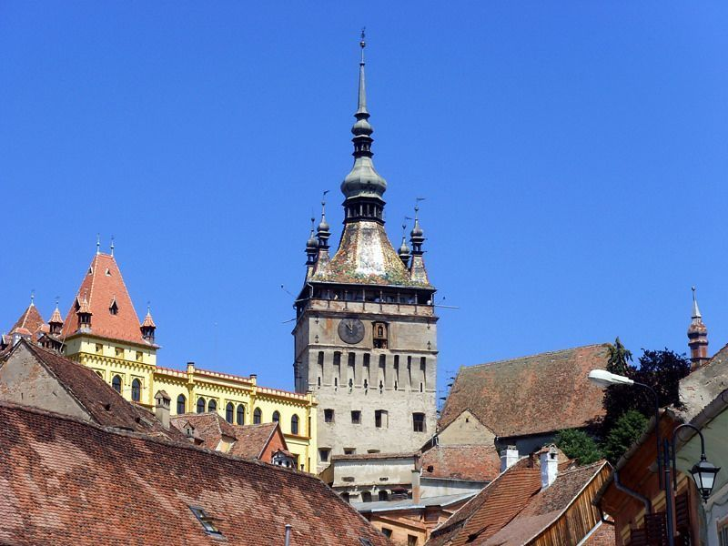
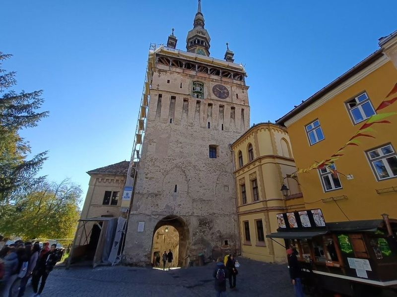
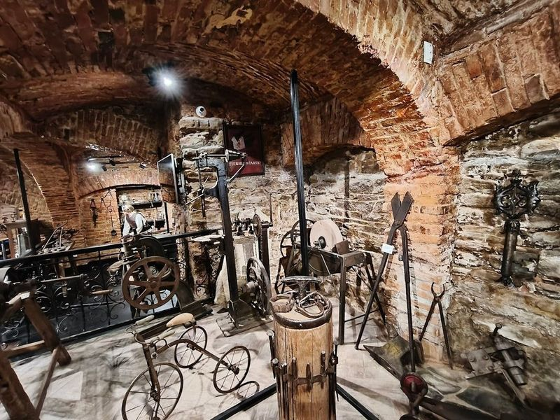
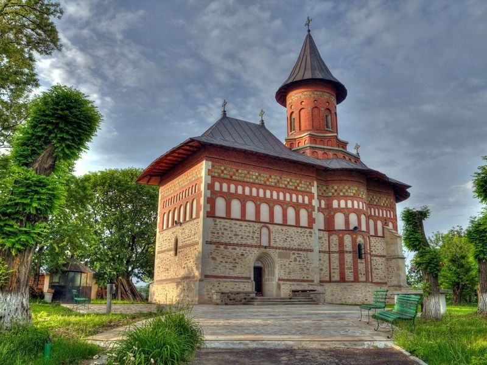
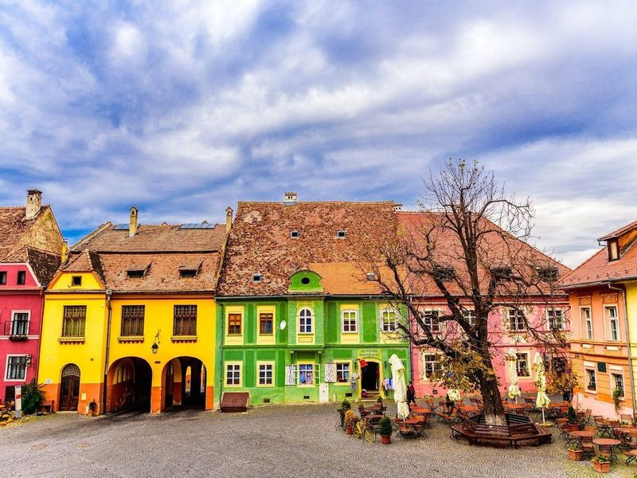
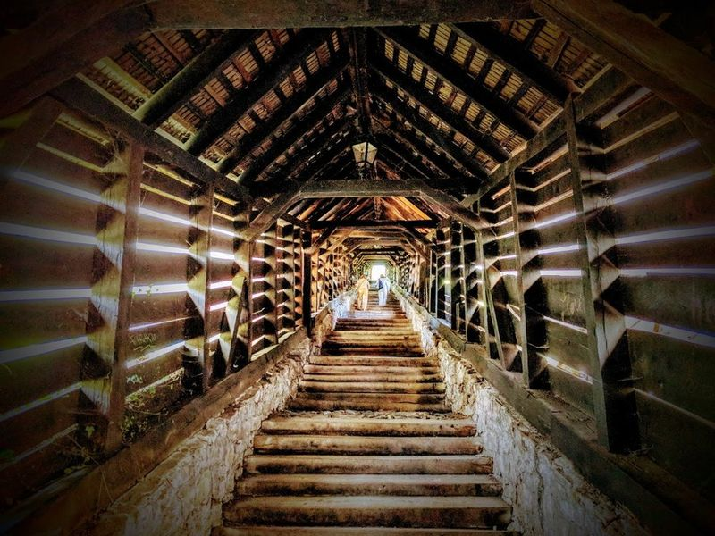
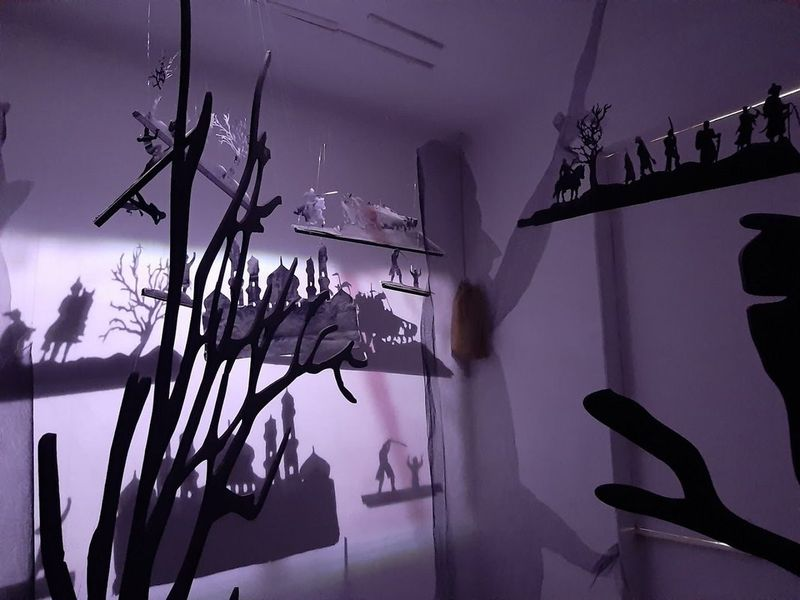

Explore Sighișoara
A Brief History
Sighișoara was founded by Saxon craftsmen and merchants invited to Transylvania in the twelfth century to defend Hungarian royal frontiers and mine nearby hills. Its hilltop citadel, covered wooden stairway to the Church on the Hill, and clock tower with animated figures express guild organisation on the Târnava Mare. Vlad Dracula was born here in 1431 in a burgher house now marked for visitors, while festivals recall how this Saxon town preserved German-language civic life into modern Romania.
Attractions Map
Top Sights & Activities

The Clock Tower
The Clock Tower, a 14th-century landmark in Sighisoara, served as the main gate to the city's citadel and controlled the entrance to the half-mile-long defensive wall. It stored the town's treasures and is part of a collection of towers that fence the citadel. The tower stands near other notable structures like The House of Vlad Dracula and The Venetian House.

The Ironsmiths' Tower
The Ironsmiths' Tower, also known as Turnul Fierarilor, was originally built to protect the monastery church during sieges. It housed a variety of defensive weaponry such as lances, muskets, pistols, and arquebuses. The tower now features a museum showcasing authentic blacksmith tools and historical information displayed on large panels. travellers can explore two levels of exhibits with information about Vlad Tepes and watch informative videos about the city's tourist attractions.

House of Guilds
Casa Breslelor, also known as the Guild House, is a museum in Sighisoara, Transylvania that showcases authentic Saxon tools and equipment used over a century ago. travellers are greeted by the owner, Rares, who provides attentive and friendly assistance. The museum offers an immersive experience with medieval music playing in the background and sounds of different craftsmen at work.

Biserica din Deal
Biserica din Deal, also known as the Church on the Hill or Sf. Nicolae, is a prominent landmark in Sighisoara that offers more than just religious significance. The Gothic architecture and guided tours provide insight into its historical and cultural importance. As a museum, it showcases valuable exhibits like 15th-century altar pieces and preserved murals dating back over 500 years.

Sighișoara Citadel
Sighișoara Citadel, a UNESCO World Heritage Site, is a historic gem located in the old town of Sighișoara. Casa Wagner, situated on the main square of the citadel, offers well-equipped rooms and fine cuisine within a unique historic setting. The hotel's rooms are individually decorated to preserve the past while providing modern amenities. The citadel itself boasts well-preserved medieval buildings, souvenir shops, restaurants, and guest houses.

The Covered Stairway
The Covered Stairway, also known as Scara Acoperita, is a historic and picturesque feature in the medieval town of Sighisoara, Romania. Dating back to 1642, this Gothic architectural marvel consists of timber steps sheltered by a vaulted roof. As travellers ascend the narrow and winding passage, they are protected from the elements while enjoying scenic views.

MYstical transylvania
Mystical Transylvania offers a unique experience for those intrigued by the Dracula legend. For a small fee, travellers can explore five rooms that use visuals, light, and sound to tell the story of Vlad Tepes and the city of Sighisoara. Unlike Bran Castle, this attraction delves into the real history behind Vlad Tepes and his impact on the region.